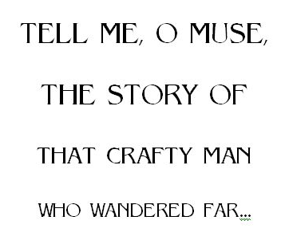
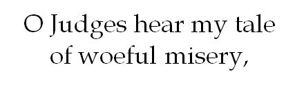
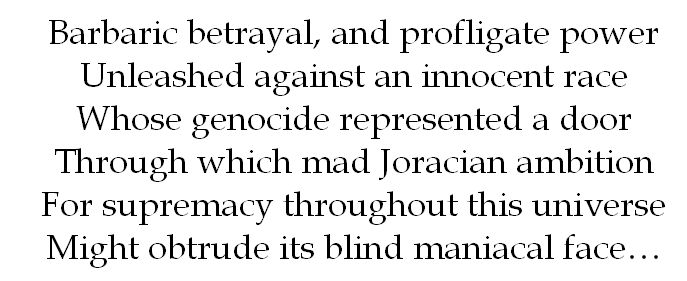
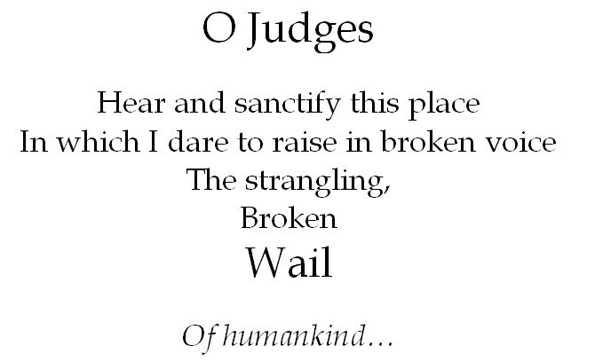

The mini-ship’s navigational system was preset to take me any place I desired to go in the whole Universe. The Cosmic “Games” of the Master Joracians transpired continuously in the Fifth Dimension, in a kind of eternal Urzeit. I headed for the G-Spot now; it was my firm intention to do everything in my power to interrupt or alter the basic constituents of cosmic reality. I didn’t know precisely how I was going to do that or what I’d find when I got there; but I knew that it was the center of power and that, if I could receive a hearing before the race of Master Joracians anywhere, it would be there, at the site and source of their Sacred Games. I think I had a vague notion of making some sort of poetic spectacle—a piece of performance art, I guess.
As my mini-ship whirled along its trajectory through the continuum of space-time, I summoned all of my inner resources, whatever internalized forces for good I could muster. I closed my eyes and I suppose I must have prayed, though I don’t remember the words I used, or even if they were words. I didn’t know what to expect when I reached the Games, or how I would recognize them, or what anything might look like when I finally got there. Suddenly, everything was very, very still. I knew I had “arrived” the moment I blacked out…
I found myself at the crux of a huge amphitheater or coliseum. I was vaguely aware of titanic, oblique faces of Joracian Masters, my Judges, beyond the ringed lights that gradually came up all around me—it would be here that the ultimate constituents of reality would be determined, and the course of cosmic history influenced or altered. Above our heads stretched an enormous crystal dome, whose sole purpose I sensed preternaturally must be one of sheer magic. Instinctively, I knew at once that I was in telepathic communion with the Joracian Masters. Somehow I also knew (did They tell me?) that I would have to make my case in poetry, that whatever words I breathed into being would emblazon and animate the crystal dome above our heads. It was incumbent on me to create, immediately, a poem so crushingly beautiful and pure that the Joracian Entelechy would see at once the necessity of sparing all the poor foolish mortals, my kinsmen, brothers and sisters, parents and children. I closed my eyes and took a deep breath; then slowly opening them, I saw the darkness lift a little, as a white-hot beam glowed upon my face, then grew to include my whole body, and my voice rose, musical at first, then more resonant and melodious…
No, no (I thought: that wasn’t right). I licked my lips, blinked my eyes, and tried again.

But this was really no better. I surmised that my time was running out, however indulgent my Joracian Hosts might be. The mother of invention. Necessity was. All right, then, I thought: very well. And, taking a deep breath…

Yes, I thought: That’s the stuff. That’s more like it.

That “obtrude,” I wondered: was it right? I couldn’t remember exactly what it meant, but felt instinctively that it must be the right word. It was best, I thought, just to barrel my way through, trusting to sound; I could hardly stop now.

Then, for the first time since I had begun to speak, to recite—to create!—the words and sounds that poured through my mind, ordering themselves by an almost unconscious discipline, I noticed that the words flooded forth, taking color and shape in the crystal dome above my head; that the lines hovered, shining and unbroken, on the expanse of the Great Dome itself. Like some shaman or bard of old, I sang as in a trance, no longer composing words or lines but articulating all the pain and anguish, sorrow and hope and beauty from some place deep inside myself as pure sophisticated images flooded through me, a mere conduit of psychic energy, filling the crystal welkin. Timeless, unaware of the passing of time, I stood outside the natural order of birth and death, outside my own birth, as a spectator. I sensed the faces of my Judges gazing upward toward the dome, transfixed by the images I drew to their attention. I sensed too, as I sang, that their alien hearts were wrung with pity and compassion for all humanity; that in their infinite mercy they could and would undo this Great Injustice, and restore us to our home on earth, to our struggle to create a place of safety for the newborn, from which generations might strive to establish sane and generous societies, praising all humane industry, art and science to which the love of men and women foster gentle decency and devotion. As a final touch, I prayed that they would not permit us to become the unwitting victims of a final murderous rage, engulfing the universe, but would give us back our mortal home of water, grass and wind, the golden light of summer afternoons, crisp newly fallen snow on moonlit winter nights, the Harvest Moon in October, the V of geese seeking another Spring…
When I had finished, I knew that some momentous decision was about to be made, that the Judges were in a hubbub, disconcerted, perhaps in disarray (had I somehow angered them inadvertently?), but this lasted only for a fleeting moment, as my own consciousness, exhausted from this epic trial, began to split apart, shatter or dissolve; and the enormous oblique faces of the Old Judges swarmed and whirled about me. I could feel myself getting dizzy and dizzier, my face and hands and feet begin to tingle and grow numb, as I struggled to postpone but finally could not resist the uncontrollable wave of sleep that now overtook me…